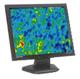
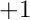

- Generated on Fri May 5 2023 22:43:11 for MIDAPACK - MIcrowave Data Analysis PACKage by
 1.9.1
1.9.1
|  |
MIDAPACK - MIcrowave Data Analysis PACKage
1.1b
Parallel software tools for high performance CMB DA analysis
|
The Toeplitz algebra package described here provides functionality for calculating products of a generalized Toeplitz matrix (understood as one of those defined earlier) and a general matrix. The latter is referred to hereafter typically as a data matrix. This is the latter matrix, which defines the reference for the global indexing scheme adopted throughout the package, which is based on its global row number. The data matrices are always stored as vectors in the column-wise order.
In MPI-cases the data matrices are assumed to be distributed over the processes as defined in Section on data distribution.
Toeplitz matrices are defined by a first row of the Toeplitz matrix trimmed to its half-bandwidth  denoted hereafter as , which one therefore includes half-bandwidth and the diagonal element), and three integer numbers giving , indices of the first and last row to which the matrix should be applied. The last two numbers are global row numbers of the data matrix. The size of the Toeplitz matrix is then implictly given as, last_row_index - first_row_index + 1. We will refer to an interval defined by these two indices as Toeplitz matrix range.
The list of specific functions provided is as follows: